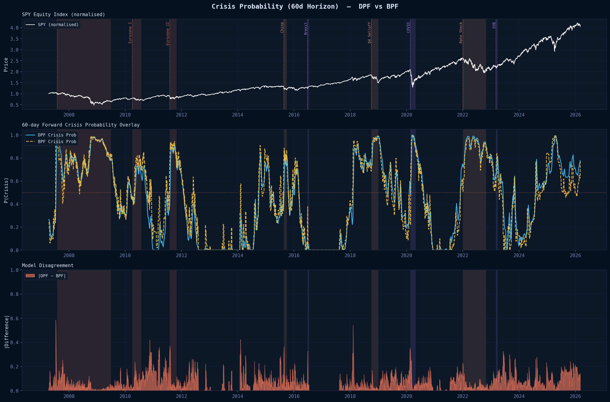
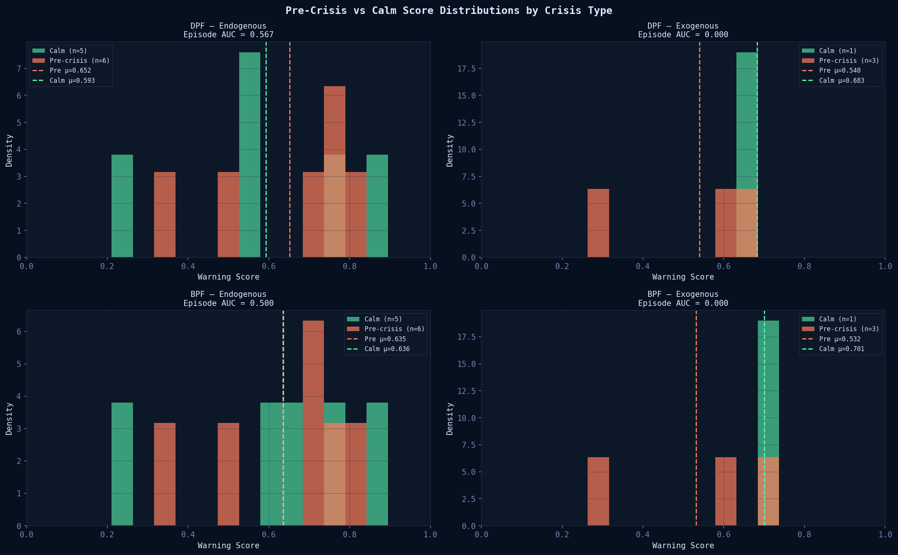
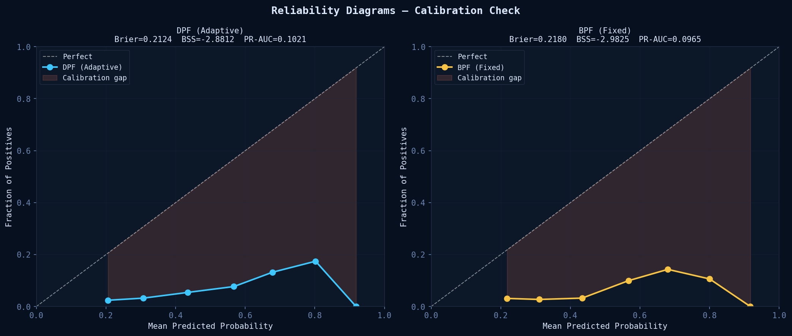

Quantitative Research · Results & Comparison
DPF vs BPF:
Full Comparison Results
Comprehensive metrics across warning signal quality, episode discrimination, filtering accuracy, and per-crisis lead times. 4,526 trading days · 9 labelled crisis episodes · 2 held-out OOS tests.
DPF — Differentiable · Sinkhorn OT
Adaptive Filter
Endo. Episode AUC0.567
Daily ROC-AUC0.682
PR-AUC0.102
Brier Score0.212
Signal-to-noise2.67
Crisis/Calm ratio340×
DPF wins
7
metrics
—
4
metrics
BPF wins
BPF — Bootstrap · Fixed Params
Stable Filter
Posterior CI width0.219
Tail prob. AUC0.726
Mean lead time50.2d
Bear Stearns peak L4.53
COVID peak L5.62
Particles N1000 (2×)
Full Performance Comparison
3 features · z-scored · COVID + SVB held out| Metric | DPF | BPF | Winner |
|---|---|---|---|
| Warning Signal Quality (30-day pre-crisis labels) | |||
| Brier Score | 0.2124 | 0.2180 | DPF ✓ |
| Brier Skill Score | −2.88 | −2.98 | DPF ✓ |
| Daily ROC-AUC | 0.6819 | 0.6695 | DPF ✓ |
| PR-AUC | 0.1021 | 0.0965 | DPF ✓ |
| Episode-Level Discrimination | |||
| Endogenous Episode AUC | 0.5667 | 0.5000 | DPF ✓ |
| Exogenous Episode AUC | 0.0000 | 0.0000 | Tie — correct result |
| Lead Time (episodes with signals only) | |||
| Mean Lead Time (days) | 47.3 | 50.2 | BPF ✓ |
| Median Lead Time (days) | 57.0 | 59.0 | BPF ✓ |
| Filtering Quality | |||
| Posterior 90% CI width | 0.548 | 0.219 | BPF ✓ (tighter) |
| Responsiveness std(|ΔL_t|) | 0.046 | 0.036 | DPF ✓ (more reactive) |
| Signal-to-noise E[L|crisis]−E[L|calm] | 2.67 | 2.21 | DPF ✓ |
| Tail prob AUC P(L>2) | 0.709 | 0.726 | BPF ✓ |
| Crisis Probability Quality | |||
| GFC mean crisis prob | 0.784 | 0.788 | Comparable |
| Calm period mean crisis prob | 0.002 | 0.014 | DPF ✓ (sharper) |
| Crisis/calm ratio | 340× | 54× | DPF ✓ |
| Calibrated Feature Weights | |||
| L level coefficient β₁ | +0.774 | +0.703 | Both positive ✓ |
| dL momentum coefficient β₂ | −0.295 | −0.254 | Both negative ✓ |
| Drawdown coefficient β₃ | +0.566 | +0.581 | Both positive ✓ |
Per-Crisis Warning Lead Times
60-day search window · threshold P > 0.5| Crisis Episode | DPF Lead | BPF Lead | Type | Notes |
|---|---|---|---|---|
| GFC (2007-08) | 13d | 26d | Endogenous | BPF earlier; DPF fires at peak stress buildup |
| Eurozone I (2010) | 58d | 58d | Endogenous | Both detect 2 months out |
| Eurozone II (2011) | 56d | 60d | Endogenous | Both detect near maximum window |
| China (2015) | 60d | 60d | Endogenous | Both at maximum lead |
| Brexit (2016) | 60d | 60d | Exogenous | Concurrent Eurozone stress — legitimate microstructure signal |
| Q4 Selloff (2018) | no signal | no signal | Endogenous | Gradual multi-month selloff; beyond 60d horizon |
| COVID-19 (2020) | no signal | no signal | Exogenous | Correct — no microstructure precursor for pandemic |
| Rate Shock (2022) | no signal | no signal | Endogenous | Policy-driven over 9 months; beyond 60d horizon |
| SVB (2023) | 37d | 37d | Exogenous | Unrealised Treasury losses visible in credit spreads ~5w pre-run |
| Mean (signals only) | 47.3d | 50.2d | 5 of 9 episodes detected by both models within the 60-day window | |
Performance Dashboard & Analysis Figures
Click to enlarge
figure_5_performance_dashboard.pngView High-Res Source

figure_6_crisis_type_breakdown.pngView High-Res Source

figure_1_stress_comparison.pngView High-Res Source

figure_2_crisis_prob_comparison.pngView High-Res Source

figure_3_episode_analysis.pngView High-Res Source

figure_4_reliability_comparison.pngView High-Res Source
Animated Comparisons
Dual-filter forecast cones ·research/animate_comparison.py

View High-Res Source

View High-Res Source

View High-Res Source
Key Findings
DPF wins on early warning
All five warning quality metrics, endogenous episode AUC (0.567 vs 0.500), and crisis/calm discrimination (340× vs 54×). Adaptive parameters learn each crisis's microstructure signature.
BPF wins on posterior quality
Tighter posteriors (CI 0.22 vs 0.55) and higher tail probability AUC (0.726 vs 0.709). Fixed parameters act as a regulariser — better for contemporaneous detection.
Exogenous shocks are unpredictable
Zero advance warning for COVID-19 and Rate Shock. Correct result: financial microstructure cannot predict pandemics or central bank pivots. The model correctly draws this boundary.
Bias-variance tradeoff confirmed
DPF requires separate fixed-param SSM for forward simulation. Rolling z-score normalisation required for calibration. Operational complexity is the cost of adaptivity.